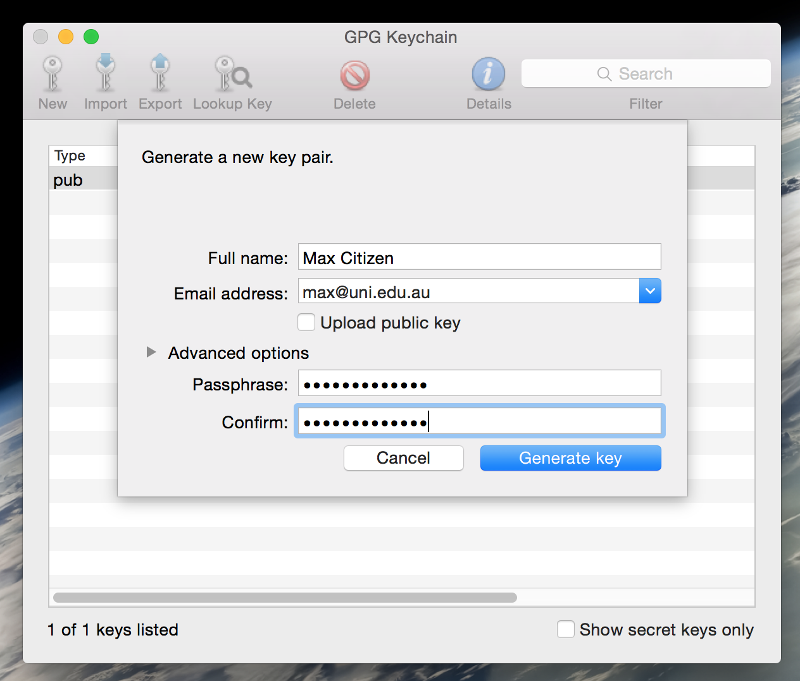
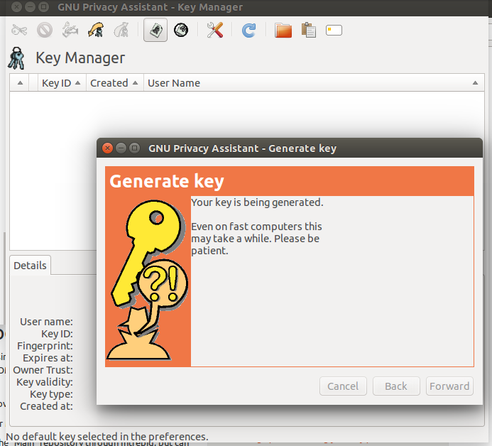
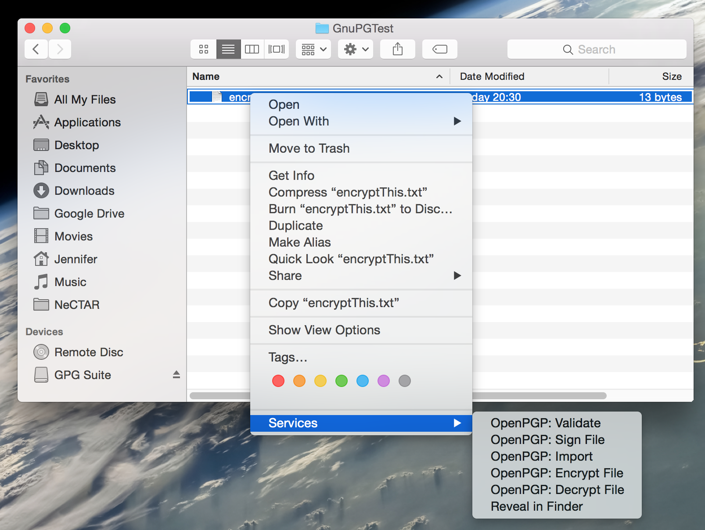
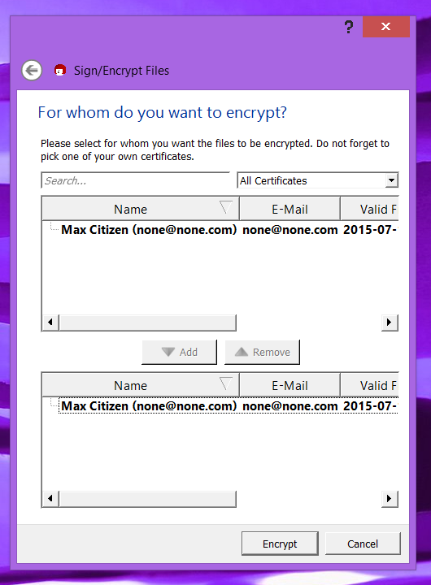

Module 8
Security
Sections of this module:
IntroductionSecurity concerns and benefits
Deployment Models
File and Volume Encryption
File encryption
Volume encryption on Ubuntu
Summary
View all sections on one page (Printer friendly)
File encryption
In the following we will discuss the following tools which support per-file encryption:
Other widely known tools which have recently received bad security audits (e.g. EncFS, OpenSSL, TrueCrypt) are not discussed in this course.
More detailed instructions are given for GnuPG, while the description of the other tools refers to related documentation.
GnuPG
GnuPG is an implementation of Pretty Good Privacy (PGP). PGP has excellent security:
“To the best of publicly available information, there is no known method which will allow a person or group to break PGP encryption by cryptographic or computational means.”
– source: Wikipedia.
GnuPG is open-source and accessible through a variety of different clients and tools. New versions of PGP are released periodically and vulnerabilities are fixed by developers as they come to light. There is a simple command line interface, but there are also many graphical interfaces available which are more popular.
The official releases can encrypt
-
Files
-
Entire volumes
-
Disk images
-
External drives
-
E-mails
-
and more.
All GnuPG tools support multiple encryption types and ciphers.
GnuPG works very well on almost all 32 and 64 bit platforms. It has mainly been developed for Unix systems, but binaries available for Windows, OS X, Debian/Ubuntu, Android and more provided (with no guarantee that binary versions provided are current). Mac users may be interested in GPGSuite.
GnuPG is easy to use and if you keep your private key and the passphrase secret, it is a very secure way to encrypt files. GnuPG also has the advantage that no passwords will appear in any script files if you use your private key to encrypt files.
GnuPG Quick HowTo
You will have to generate a key pair before you can use GnuPG. In the process, you need to specify your E-Mail address (because you can use GnuPG for encrypting E-Mails). Choose the one you usually use, but you can also specify any address and change this later.
- Mac OS X:

- Download GnuPG from the official website. Download the “binary release” installer (or get the “source release” and follow installation instructions on the website). If you have the choice, select the GnuPG stable or modern installer and install the software.
- Open the “GPG Keychain” application (find it with spotlight search).
- Click on “New” to generate a new key and specify your name, E-Mail and passphrase.
- Hit “Generate”. Your new key will be listed in GPG Keychain after it has been created.
- Windows:
- Download and install the graphical interface to GnuPG “GpGForWin” from www.gpg4win.org. Make sure Kleopatra is checked.
- Open the Kleopatra application which you may find with the app search field or via Start > Gpg4win > Kleopatra.
- Go to File > New Certificate and select to create a personal OpenPGP key pair.
- Linux:

- GnuPG may be available as a package in your distribution. For example in Ubuntu, you may install the Gnu Privacy Assistant in the package gpa, which includes GnuPG and a graphical interface:
sudo apt-get install gpa
Or you may install command-line tools only:
sudo apt-get install gpnupg
If it is not in your package manager, you can download GnuPG from the official website. - Start up gpa. You may receive an error about not having a key yet. Close this window and confirm to generate your first key now. Enter your details and follow the instructions in the wizard.
- Alternatively, create a key in the command line.
gpg --gen-key- Specify your choices in the command line. Ideally, choose RSA, and a “Real name” without whitespaces.
- If there is an error about not enough random bytes, you may solve it by starting up an application which takes a lot of cpu time. Or, you can simulate “lots of work” with the rngd tool:
sudo apt-get install rng-tools
sudo rngd -f -r /dev/random
In a new terminal:
gpg --gen-key
When the key generation is finished, cancel the rngd application in the other terminal with [Ctr+C].
- You can find more useful information on the ubuntu help page.
- GnuPG may be available as a package in your distribution. For example in Ubuntu, you may install the Gnu Privacy Assistant in the package gpa, which includes GnuPG and a graphical interface:
Two keys will have been generated: A public key which is used for encryption, and a private which is used for decryption.
To encrypt a file, you must have the public key which you want to use for encryption. You have just generated one in the last step.
- Mac OS X:

- Open the Finder and right-click on the file you would like to encrypt.
- Select Services > OpenPGP: Encrypt file.
- Select your key in the list and click “Ok” (you may also choose several keys).
- A new file with the same name but ending with .gpg will have been created in the same folder.
- Windows:

- Open the Windows Explorer and right-click on the file you would like to encrypt.
- Select Sign and encrypt.
- You may keep the default options in the dialogue, which is set on Encrypt by default. Confirm with Next.
- Select your key in the list and click “Add” to add it to the list (you may also choose several keys).
- Click “Encrypt” to encrypt the file, and close the confirmation window with “Finish”.
- A new file with the same name but ending with .gpg will have been created in the same folder.
- Linux:
- Files are encrypted and decrypted in the command line. You have to specify a recipient, which is either you (name or email you chose for the key), or someone you want to send the file to (you need to have their public key then):
gpg --output <encrypted-file.gpg> --encrypt --recipient <user> <file-to-encrypt>
- Files are encrypted and decrypted in the command line. You have to specify a recipient, which is either you (name or email you chose for the key), or someone you want to send the file to (you need to have their public key then):
To decrypt a file, you need to have the private key of the intended recipient (when the file was encrypted). So the encrypted file will have to be encrypted for the name associated with one of your private keys.
- Mac OS X:
- You just have to double click on the .gpg file and it will prompt for the password.
- Alternatively, you may decrypt it via right click > Services > OpenPGP: Decrypt file.
- You will be asked for the passphrase.
- You can find the decrypted file in the same folder; the name may have been extended with a number in order to prevent overwriting the original file.
- Windows:
- You may decrypt by right clicking on the file and selecting Decrypt and verify.
- You will be asked for the passphrase.
- Note: it is best if you change the output folder in order to prevent the original file to be overwritten.
- You can find the decrypted file in the same folder (or specified output folder).
- Linux:
- Similar to encryption of a file, using the command line.
gpg --output <decrypted-file.gpg> --decrypt <file-to-decrypt>
- Similar to encryption of a file, using the command line.
You can find more useful information about file encryption on the GnuPG manual pages.
AESCrypt
AESCrypt is a free, open-source tool which is available for Mac, Linux and Windows. It provides a secure way to encrypt individual files, using the industry standard Advanced Encryption Standard (AES).
AESCrypt is easy to use: On Windows, you only right-click on a file, select AES Encrypt (or Decrypt) and enter a password. On a Mac, you drag the file into the AESCrypt program and type in the password. On the Linux command line, you may use the command aescrypt along with the name of the file and the password.
The AESCrypt website provides an excellent documentation on how to set up and use AESCrypt.
Encrypted zip file
Zip files can be password-protected, but the standard Zip encryption scheme is extremely weak. If your operating system has a built-in way to encrypt zip files, you probably shouldn’t use it. You should use AES-256 encryption. The tools discussed in the following do support AES-256 encryption.
Zip files are archives containing individual files, so this cannot be used to encrypt entire volumes.

The older zip encryption is not secure! Several tools can create encrypted zip files (the older, insecure version).
For example,
-
On Windows, you can right-click on a file and select Compress… to create a zip archive.
-
On Linux or Mac, this can be done via command line:
zip -0 -e backup.zip <yourfile>
The option -0 means “store only” and don’t compress — this is faster. -e means encrypt archive.
It will ask for the password.
This is not secure!
Use the more secure methods described in this section.
Windows: 7-zip
7-zip is great for compressing files and is also a strong file encryption tool. It’s free even for commercial use and supports 256-bit AES encryption. The official download is Windows only, but there are also unofficial Linux and OS X versions.
In 7-Zip, you can select files in the Windows Explorer window, right-click and select 7-Zip > Add to archive. You should make sure to select the Add to archive option in order to encrypt the file. You will be given the option to set a password, make sure you select one! Alternatively, you can open the 7-Zip application and create the archive from there.
7-Zip will create a 7z archive by default, but you can also choose Zip. If you do opt to go with Zip, be sure to select the AES-256 encryption method instead of the weaker ZipCrypto method.
Mac: Keka
With Keka, you compress individual files by dragging and dropping them to Keka in the Dock. You may drop multiple files at once, and they will be compressed as one zip file. You can get Keka from the Mac App Store, here is good documentation on the website on how to use it.
Keka creates encrypted 7z files.By default, the 7z *files will be encrypted using *AES-256, which is secure. If the selected format is Zip, Zip 2.0 legacy encryption will be used, so this is not recommended!
Linux: p7zip
The file explorer on your Linux desktop can be used to create encrypted 7z archives. You first need to install the p7zip-full package (it may also simply be called p7zip on some Linux distributions). Installing p7zip-full allows your file explorer encrypt your files or folders in the 7z compression format. You may find it in your package manager, e.g. on Ubuntu
sudo apt-get install p7zip-full
Then, open your file explorer, right click on the file and select Compress…. Be sure to select 7z as a format! In the window that comes up, expand Other Options, tick encrypt the file list too and type in your password.
You may also use p7zip in the command line. The command is simply called 7z. Refer to the man pages for usage.
p7zip does not store the owner and group of a file. So if you want to use it for backup purposes (or for other reasons want to preserve owner/group), you should pack your files in a tar archive first, and then encrypt the tar archive with p7zip.
To create a tar archive:
tar -cf <tar-file-name>.tar <list of your files or folders>
To extract a tar archive:
tar -xf <tar-file-name.tar>
Then, compress the tar archive file with p7zip as described.

 This work is licensed under a
This work is licensed under a